- Genseiryu Zomerkamp 2005 bij sensei Jackie Moos in Denemarken
(23-25 september 2005) Datum gepost: 3
oktober 2005
Aangezien dit een internationaal trainingskamp was, staat de verslaggeving (in het Engels èn in het Nederlands) hierover op de algemene Nieuwspagina!
- Uitslag Kyu-examens, gehouden op zondag 17 juli in Anna
Paulowna Datum gepost: 25 juli 2005
Na een lang weekend zwoegen in de "Nekker" in Mechelen (België) kwam voor velen het moment van de waarheid op deze zondagavond: het kyu-examen! Voor foto's van het België-weekend wil ik verwijzen naar het Genseikan-Weg-Log.. Ook de foto's van de examens staan op dit web-log! Met dank aan Sharon Appelman en Raoul Tehi!
Van de 38 mensen die examen deden, is IEDEREEN geslaagd. Hieronder volgt een lijst:
(Namen op alfabetische volgorde. Achter sommige namen staat tussen haakjes van welke Kyu deze persoon kwam, indien deze één of meerdere heeft overgeslagen)
Ryan Zwart Sharon Appelman |
Mario Roering Stephan Ho (van 4e Kyu) |
Willem Bulthuis (van 5e Kyu) |
Edwin de Waard Piet de Vroe Richard de Waard |
||||
Djelena Maarsen Gregory McConnell Lisa de Vroe Mats Hiemstra Mike Janssen René Kijk in de Vegte (7e Kyu) Ruben de Beus Sergio de Oliveira Sofia de Oliveira |
Femke Tiessen (van 9e Kyu) Marloes Langeveld Verena Fitz Wilson Clemencia |
Dennis Geerlings (van 9e Kyu) Liane van Duin Melissa de Wit (van 9e Kyu) Niels (van 9e Kyu) Rebecca Sikman Rick van Baaren (van 9e Kyu) |
Rilana Sikman Ruben IJkelenstam Wendy |
Aan al deze mensen: van harte gefeliciteerd!!!
Met dank aan Sharon Appelman voor de uitslagen... Mocht er iets niet kloppen in deze lijst, mail me me dan!
- Scheidsrechtersexamens Kata D en Kumite D Datum
gepost: 2 juli 2005
Op 2 juli j.l.werden in Amstelveen (in onze "eigen" dojo) examens afgenomen voor Scheidsrechter Kata D en Kumite D. Van onze vereniging deden mee: Sensei David (alleen Kumite, heeft al Kata C), Ester (idem), Sharon, Paul en Mario. Er waren ook veel karateka's van andere verenigingen aanwezig (o.a. van Yokoso, Amstelveen), ik denk zo'n stuk of 20 in totaal. Iedereen was geslaagd voor beide examens. Na de examens werd alles in de praktijk geoefend, zowel kata als kumite. Dit was een zeer leerzaam gebeuren! De uitslagen: David 10 (kumite), Esther 10 (kumite), Sharon 7 (kata) en 9 (kumite), Paul 6 (kata) en 9 (kumite), Mario 9 (kata) en 9 (kumite). Natuurlijk iedereen van harte gefeliciteerd!
- Demonstraties in Osdorp Datum gepost:
2 juli 2005
Ook op 25 juni j.l. werden er een paar demonstraties gegeven door de KLM Genseiryu Karateclub Amstelveen / Genseikan Anna Paulowna. Dit maal in Amsterdam-Osdorp. Hier was voorheen al een dojo waar David lesgaf, maar deze werd helaas gestopt bij gebrek aan leden. Door deze demonstraties hopen we weer genoeg mensen te vinden die enthousiast zijn over deze mooie sport. In totaal hebben we (Sensei David, Joost, Suzanne, Esther, Ciska, Maurice, Sharon, Mario, Chiel, Mayla, Sergio, David en Daan) drie demonstraties gegeven op respectievelijk het Plein 1940-'45, Osdorpplein en het Belgiëplein. David koos ervoor om de demo op dezelfde manier te laten zien als onlangs in Amstelveen. Superdruk was het helaas niet, maar er bleek toch veel belangstelling te zijn. Hopelijk gaan deze allemaal bellen en kunnen we opnieuw beginnen met een dojo in Osdorp! Er zijn wel foto's gemaakt, maar nog niet op internet gezet (Sharon?!?).
- Demonstratie in Amstelveen Datum
gepost: 2 mei 2005
Op 30 april j.l., dat was dus Koninginnedag, werd in het centrum van Amstelveen op het stadsplein een karate-demonstratie gegeven door de KLM Genseiryu Karateclub Amstelveen / Genseikan Anna Paulowna. Sharon heeft hierover al een stukje geschreven die ik hier heb overgenomen (bedankt Sharon!):
Op het stadsplein in Amstelveen hebben de karateka's Joost, Suzan, Ciska, Maurice, Sharon, Ryan, Mario, Vincent, Mike, Gregory, Ruben, Bianca en David een demonstratie gehouden onder leiding van Sensei David en Sensei Konno. Die ochtend nog getraind om alles door te nemen en de puntjes op de 'i' te zetten. We stonden rond 3 uur al op het plein om te bekijken waar we moesten gaan staan. De demonstratieplek was groter dan we hadden geoefend, dat viel gelukkig mee. Wel moesten we lang wachten om zangers en een zangeres die dachten dat ze de nieuwe Frans Bauer waren. Niks tegen Frans Bauer, maar daar hebben ze er al één van. Toen wij eindelijk begonnen was het plein leeg. Luchtkussens waren opgeruimd dus viel het extra op dat er nog een groepje mensen in witte pakken met verschillende kleuren banden op het plein stonden. Rond half 5 waren we aan de buurt. Als eerst inleidende basistechnieken, gevolgd door stootkussen. Daarna werden Ten-i-no-Kata en Chi-i-no-kata synchroon opgevoerd. Vervolgens de breektest. Ruben die vorige week nog een plankje doortrapte slaagde deze keer jammer genoeg niet. Melanie moest daarna in één keer het plankje doortrappen. Toen sloeg David met een handtechniek een plank doormidden en daarna Sensei David die onder assistentie van Sensei Konno 3 planken doormidden stootte. Het publiek was enthousiast en we vonden veel mensen die onze folder in ontvangst wilden nemen.
NB: Op de site van Ryan staan mooie foto's (opent in nieuw venster)!
- Charity Toernooi Rotterdam, zondag 17 april 2005
Datum gepost: 20 april 2005
Op het Charity Toernooi in Rotterdam op 17 april j.l. wist Ryan Zwart de 2e prijs te behalen. Ik ben zelf niet aanwezig geweest, daarom verwijs ik jullie graag verder naar de site van genseikanboy.
- Training met Sensei Suzuki Shigeo Datum
gepost: 13 april 2005
Op maandag 11 april om 19:00 was in Anna Paulowna een speciale extra training, ter gelegenheid van het bezoek van Sensei Suzuki Shigeo (leraar van Sensei Konno) en zijn vrouw. Ook was Yamaguchi-san aanwezig, een persoonlijke vriend uit Tokyo van Sensei David. Yamaguchi-san trainde keihard mee, maar nog een grotere verrassing was dat ook Sensei Suzuki in dogi de dojo binnenkwam. Het was een hele eer dat hij meedeed en waar nodig mensen corrigeerde op hun technieken. Mevrouw Suzuki bleef aan de kant om alles vast te leggen op celluloid. De opkomst was enorm: de zaal was gevuld met karateka's van Anna Paulowna, Den Helder en Amstelveen. Er waren zo'n 45 karateka's aanwezig en langs de kant zat nog een handjevol ouders te kijken! Aan het eind van de les overhandigde Sensei Suzuki een geschenk aan iedereen: een hoofdband met de Japanse rode zon (van de Japanse vlag) en twee Japanse Kanji-tekens 必勝 (Hisshoo, 'certain victory' ofwel 'een zekere overwinning' of vrij vertaald 'altijd winnen!'). Na afloop kon iedereen natuurlijk nog even snel op de foto. Na de les werd in het 'Wapen van Holland' nog even een klein feestje gebouwd waar o.a. sensei David en sensei Konno uit volle borst het Japanse Olympische lied (Athene, 2004) zongen. Hiervan zijn opnames gemaakt, maar laten we voor het voortbestaan van deze site en de club die maar niet publiceren...;-)
Klik op de foto voor een vergroting (klik op 'back button' van je browser om terug te keren):
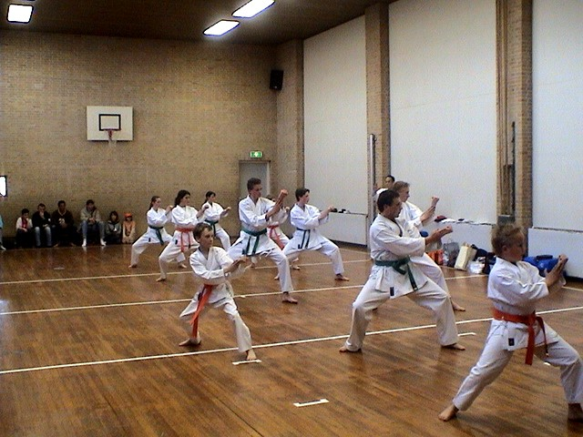
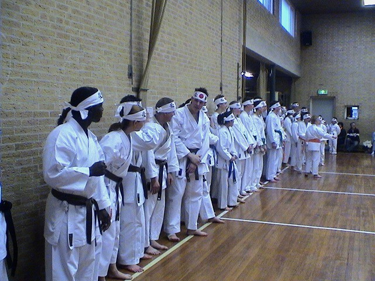
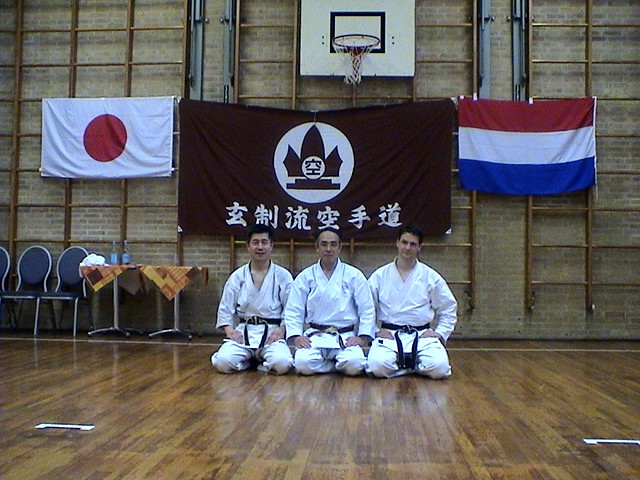
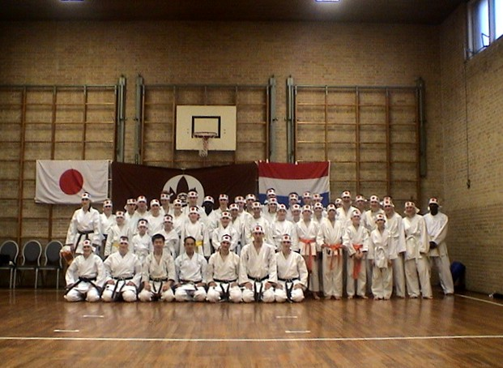
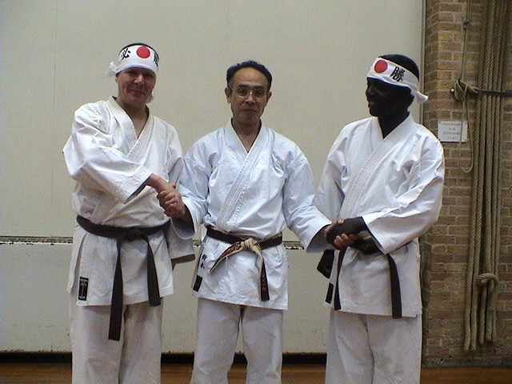
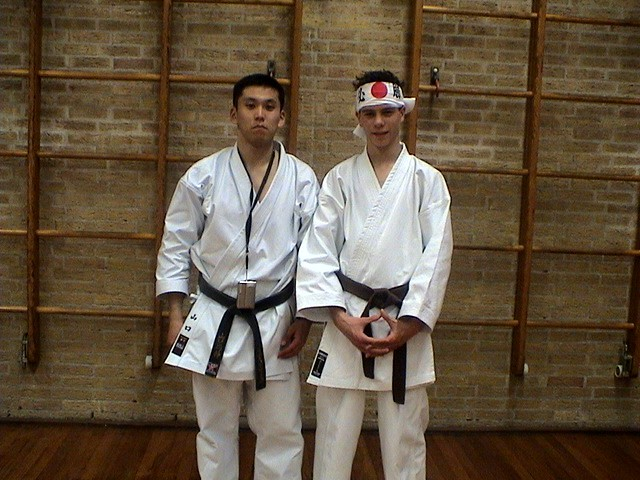
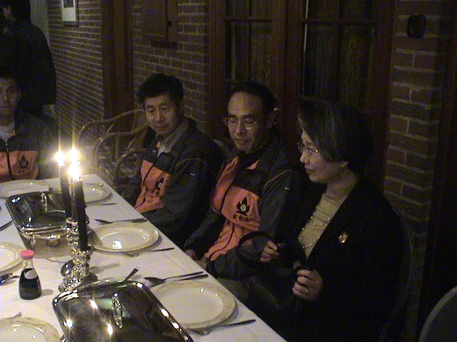
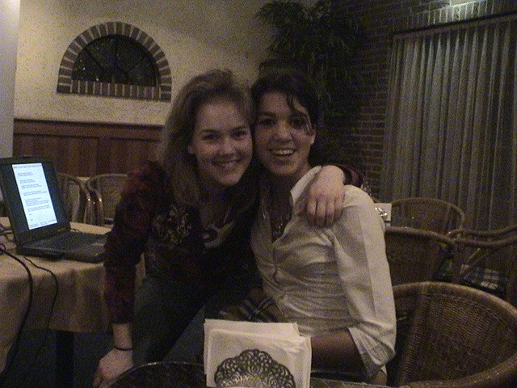
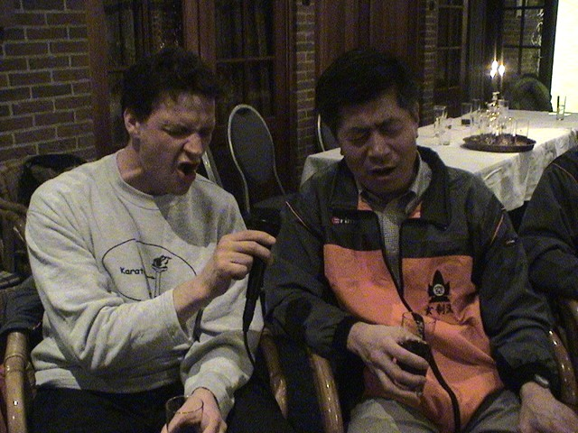
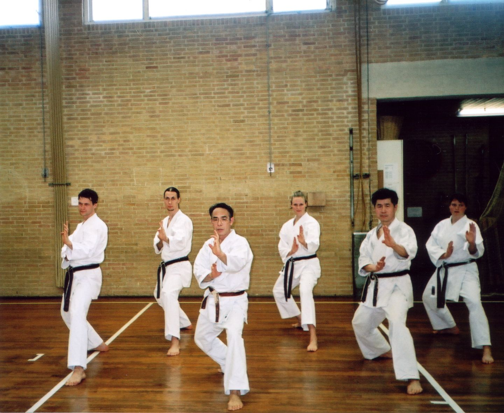
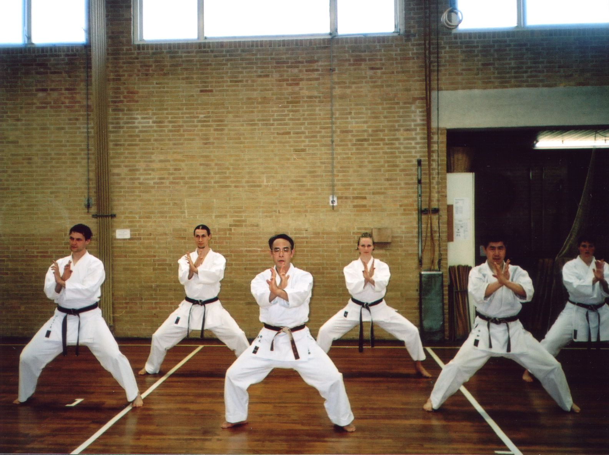
- <----
Thanks to sensei Konno
for these two pictures!
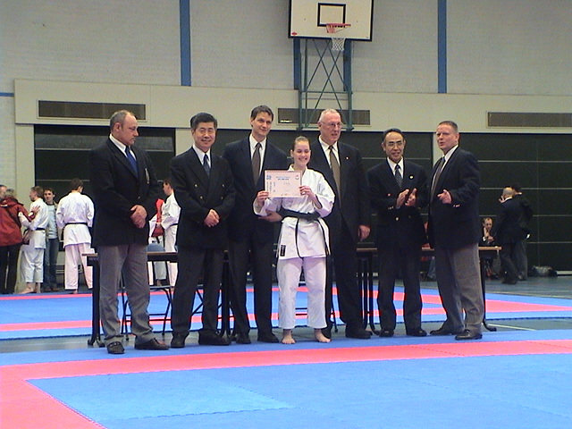
- Melanie Hertogh behaalt zwarte band Datum
gepost: 10 april 2005
Zondag 10 april stond in het teken van de KBN-examens voor zwarte band (1e t/m 5e Dan), gehouden in Utrecht-Lunetten. Onze eigen Melanie deed hier voor de eerste maal aan mee en haalde zeer overtuigend haar 1e Dan. Ze kreeg het diploma persoonlijk uit handen van niemand minder dan Sensei Suzuki Shigeo (leraar van Sensei Konno!) die op bezoek is in Nederland en zelfs zijn vakantie één week heeft opgeschoven om bij het examen aanwezig te kunnen zijn. Van harte gefeliciteerd Melanie!!!
|
|
|||||||||||
| Wedstrijdverslagen (klik op de foto's voor een vergroting, gebruik de "back" button om terug te gaan): | ||||||||||||
| Voor Mike Janssen was het zijn eerste echte toernooi. Hij had de pech dat hij uitkwam tegen jongens die ruim een jaar ouder en bijna een kop groter waren. Al in de eerste partij kreeg hij een aardige klap onder zijn rechteroog te verwerken. Weliswaar een waarschuwing voor de tegenstander vanwege 'ongeoorloofd contact met het gezicht', maar de stempel op de partij was gezet en Mike verloor. Toch wist Mike zich goed te weren en kon zelfs de tweede partij winnen! De derde partij verloor hij echter weer en was het over-en-uit voor Mike. Wel een ervaring rijker en wie weet, volgend jaar is hij zèlf misschien een kop groter dan zijn tegenstanders! Goed je best gedaan hoor Mike! | 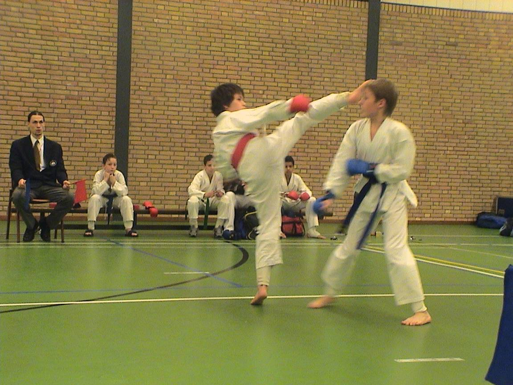 Mike heeft een felle tegenstander, die hoge mawashi's trapt. |
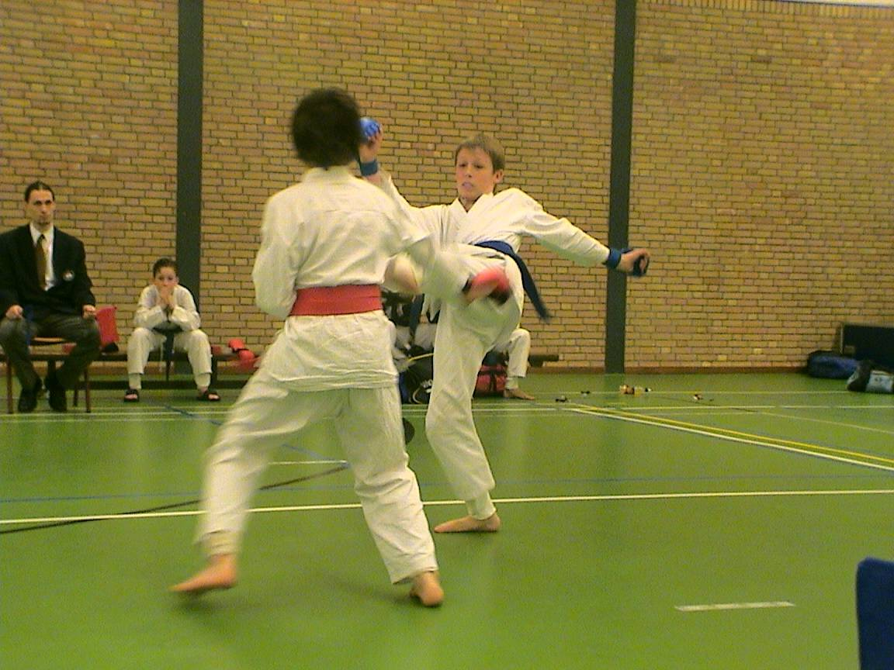 Maar ook Mike bijt fel van zich af! Al gaat soms zijn dekking wat te ver open. |
||||||||||

{kind=link}
{kind=link}
{kind=link}
{kind=link}
{kind=link}
{kind=link}
{kind=link}
{kind=link}
{kind=link}
{kind=link}
{kind=link}
{kind=link}
{kind=link}
{kind=link}
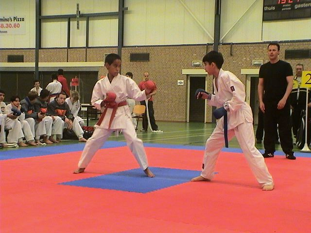 Dennis laat zich niet intimideren en is klaar voor de aanval! |
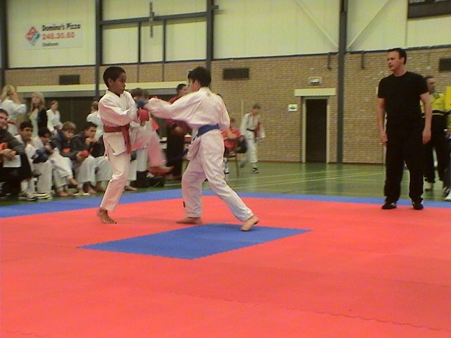 Een moeilijke match, maar Dennis doet goed zijn best. |
Ook Dennis Geerlings maakte zijn entree op dit toernooi. Ondanks zijn witte band hadden we goede hoop dat hij in de prijzen zou vallen, aangezien hij in de lessen al zijn talent had laten zien. Dennis zat in een kleine poule waarin de eerste match echter een tandje te zwaar voor hem bleek te zijn. Hij vocht erg goed maar zijn tegenstander was nèt ietsje beter. Dennis verloor en moest in de volgende match al voor de 3e en 4e prijs. Ook deze tegenstander bleek erg goed, maar hij was ietsje tè fel. Waarschuwing op waarschuwing vanwege te hard optreden tegen de kleinere Dennis stapelde zich op en leidde tot diskwalificatie. Derde prijs voor Dennis! Gefeliciteerd! |
{kind=link}
{kind=link}
| Voor David Keijzer was het ook zijn eerste toernooi en zat in een hele kleine poule. Hij hoefde slechts één wedstrijd te spelen. Erg makkelijk ging deze echter niet. Beide deelnemers konden zich aardig met elkaar meten en het ging dan ook gelijk op tot aan 4-4. David kreeg enkele rake klappen in het gezicht, maar liet zich niet kennen. Hij won deze match met 5-4 en kreeg daarmee verdiend de eerste prijs! Proficiat! | 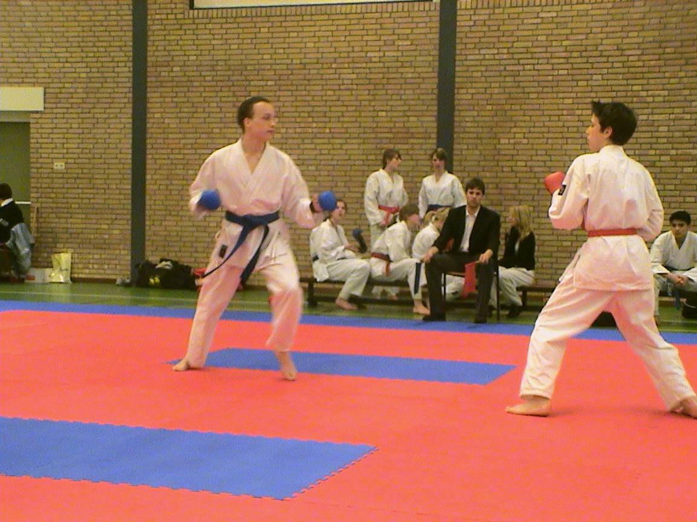 |
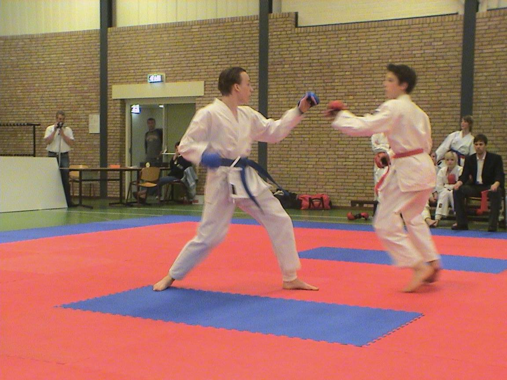 |
{kind=link}
{kind=link}
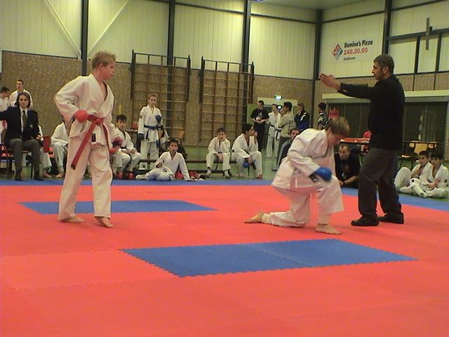 Mike verwerkt een aanval! |
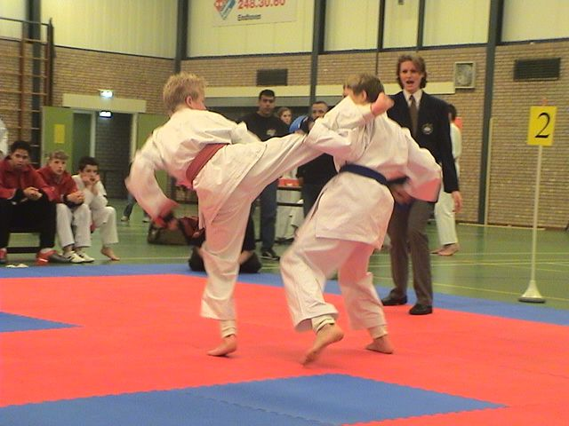 Mike neemt wraak. |
Mike Brouwer maakte al een paar eerdere toernooien mee, maar ik geloof dat dit zijn eerste no-contact toernooi was (toch Mike?). Mike zat in een relatief grote poule en had met in totaal vier wedstrijden nog het meeste gewerkt van allemaal. De eerste wedstrijd leek hij naar zijn hand te zetten en kwam al snel op een 5-0 voorsprong. Toen hij echter een harde klap kreeg te verwerken, had dit ook een impact op de wedstrijd en kwam de tegenstander terug op 5-5. Het werd verlenging, maar Mike wist toch nog te winnen. In de tweede wedstrijd kreeg Mike een behoorlijke klap in het gezicht. Hij verloor nipt met 3-2. Voor de derde wedstrijd bleek Mike goed opgewarmd en won zonder problemen met 6-0. Omdat hij één wedstrijd had verloren, mocht hij nog strijden voor de derde plaats en ook dat deed hij met weinig moeite: 7-1. Well done Mike!! |
{kind=link}
{kind=link}
| Ook Ryan Zwart is al niet meer onbekend met toernooien. Hij liet ook vandaag zijn talent weer zien: in de eerste wedstrijd vielen over en weer harde klappen, maar Ryan won verdiend met 3-1. In de tweede wedstrijd en meteen de finale (ook al zo'n kleine poule!) kwam hij echter een paar keer in moeilijkheden. Toch werden er steeds geen punten toegekend en kwam het scorebord niet verder dan 1-0 in het voordeel van Ryan, wat hem de eerste prijs opleverde. Gefeliciteerd! | 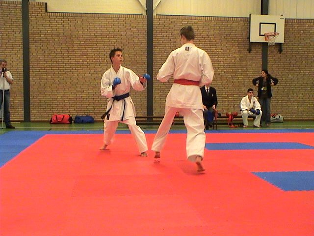 Ryan wacht de aanval af. |
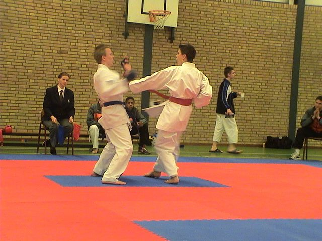 Een mooie gyaku tsuki met ki-ai! |
{kind=link}
{kind=link}
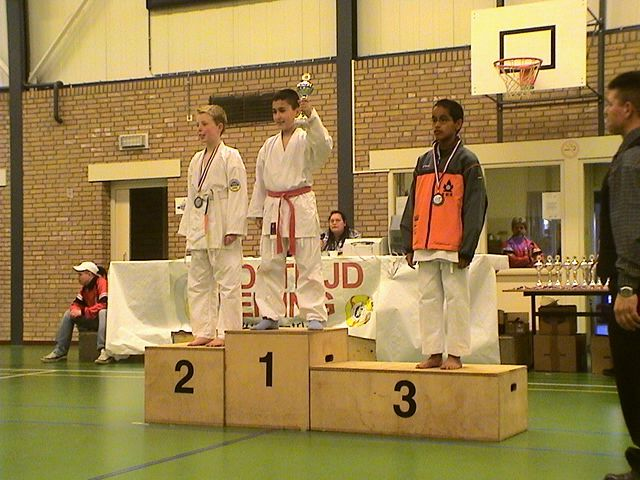 3e Prijs (12-13 jr, wit): Dennis Geerlings. |
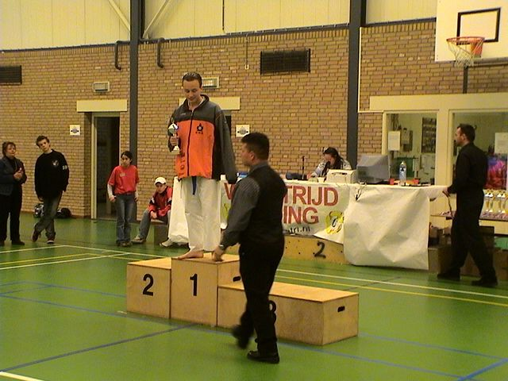 1e Prijs (12-15 jr, geel): David Keijzer. |
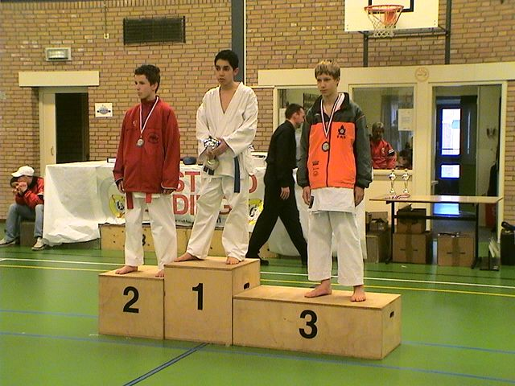 3e Prijs (12-15, bruin <50 kg): Mike Brouwer. |
{kind=link}
{kind=link}
{kind=link}
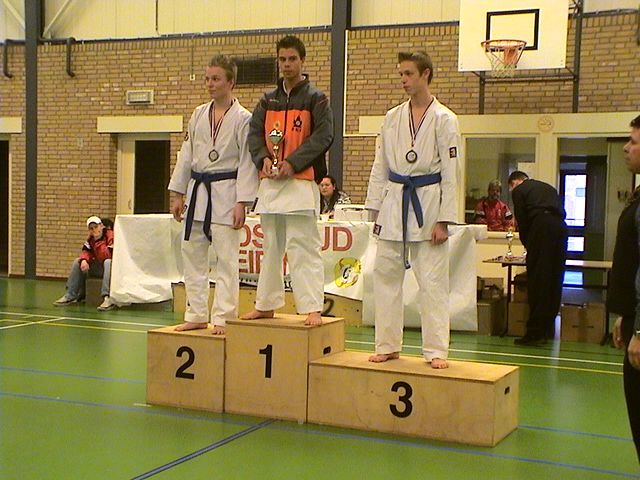 1e Prijs (12-15, bruin 50-65 kg): Ryan Zwart. |
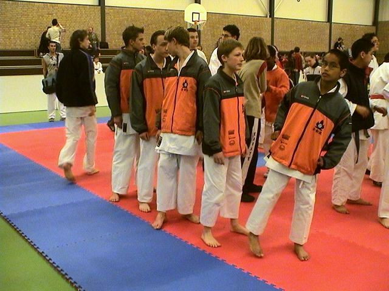 Oplijnen... Hoe ging dat ook alweer? |
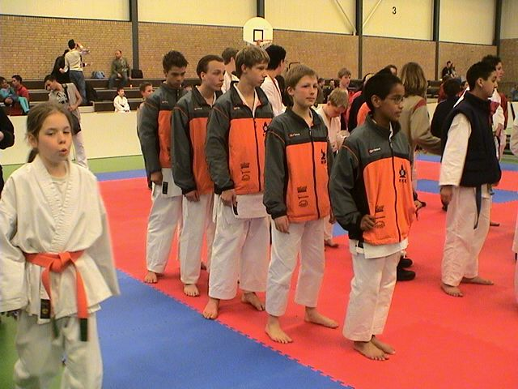 Eindelijk mooi opgelijnd.... |
{kind=link}
{kind=link}
{kind=link}
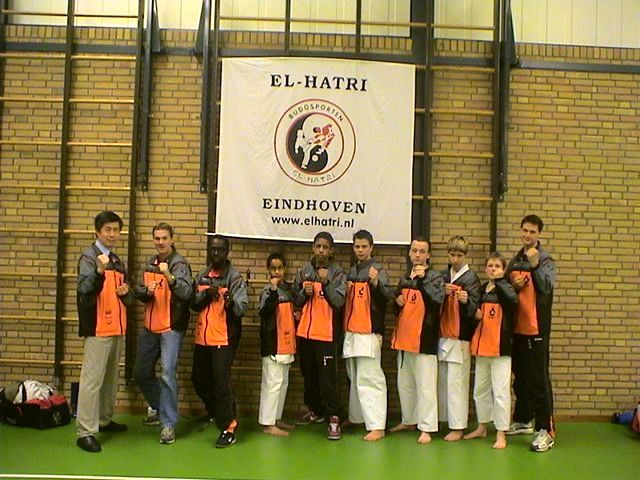 Groepsfoto van alle aanwezigen van Genseiryu. |
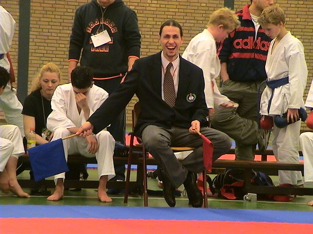 Joost van Bruggen houdt van vlaggen! |
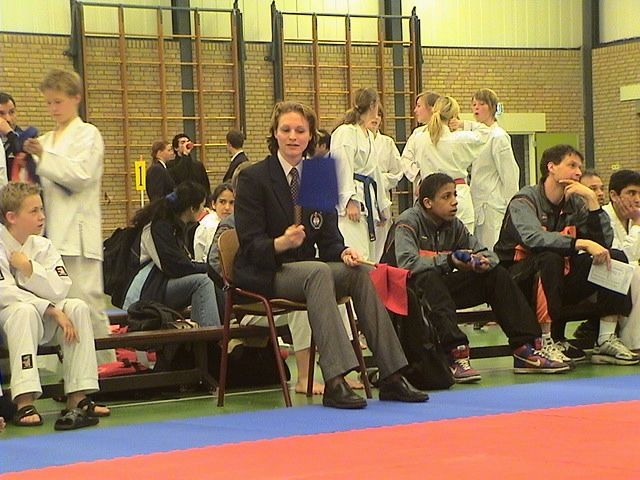 Suzanne Schilder twijfelt nog? |
{kind=link}
{kind=link}
{kind=link}
Op zondag 3 april (de dag erna dus) ben ik ook nog gaan kijken naar de wedstrijden voor 18-34 en voor 35 jaar en ouder. Er deed helaas niemand mee van Genseiryu... Ook hier hele mooie wedstrijden. Sommige wedstrijden leken bijna op een judo-gevecht, want tegenwoordig mag ook geworpen en pootje-gehaakt worden en zo. Soms ging het er wel hard aan toe (hoezo 'no contact'?), maar ik heb geen grote blessures gezien. Ondanks her-en-der wat klachten over de jurering en over de gladheid van de matten (opmerking die ik opving van een coach: 'op deze matten moet je met schaatsen aan!!') beide dagen, al met al een geslaagd toernooi! Met dank aan sensei El-Hatri en zijn vereniging die het allemaal organiseerde... |
 Op de foto met oude karate-vriend Elmo Diederiks (3e Dan en bij Nederlandse selectie Kata) van El-Hatri. |
- KLM Karateclub start met lessen voor "de kleintjes" (vanaf 8 jaar)
Datum gepost: 30 maart 2005 - Aangepast: 4 april 2005
Vanaf dinsdag 5 april wordt er een extra les ingepland voor kinderen vanaf 8 jaar oud. Dit zal elke dinsdag van 17:30-18:30 plaatsvinden in de gymzaal naast de basisschool 'De Triangel' in Amstelveen. De 'oudere' karateka's (vanaf een jaar of 13) van de KLM Karateclub hebben gewoon hun les zoals altijd om 19:00 in de gebruikelijke zaal aan de Noorddammerweg 55 in Amstelveen. Voor de kinder-training op dinsdag om 17:30 is iedereen tussen 8 en 12 jaar van harte welkom om een keertje te komen kijken. Neem een t-shirt en lange sportbroek mee! Kun je lekker meedoen!! Meer info: bel Sensei David Roovers (tel: 06-41301603).
- KLM Karateclub in Tokyo Datum
gepost: 28 Januari 2005
Dit jaar bestaat Gensei-ryu 55 jaar en Taido 40 jaar (voor degenen die het niet weten: Taido is een andere vechtstijl die Sensei Shukumine heeft ontwikkeld, 15 jaar nadat hij het Gensei-ryu had ontwikkeld). Hieraan werd natuurlijk niet voorbij gegaan. In Tokyo, Japan werd op 23 januari j.l. een klein feestje gehouden ter ere hiervan en ook Genseiryu Nederland (dus de KLM Karateclub) was daarvoor uitgenodigd via Sensei Konno...
De KLM Karateclub was erbij in de vertegenwoordiging van: Sensei Konno, Sensei David, Raoul Tehi, Paul Schrama, Verena Fitz en ikzelf (Mario Roering). De beide Sensei waren al ruim een week van te voren vertrokken, Raoul en Paul enkele dagen tevoren en Verena en ik gingen twee dagen voor de ceremonie, dit omdat ik dan werkend heen en terug kon (als piloot dus, voor degenen die dit niet weten). Erg leuk, want zo kon ik natuurlijk mijn leraren en karatevrienden 'zelf' naar huis brengen en ze ook nog eens de cockpit laten zien!
Wat betreft de demonstraties en ceremonie enzo, wil ik graag verwijzen naar de FOTO-GALERIJ. Foto's zeggen toch meer dan woorden...